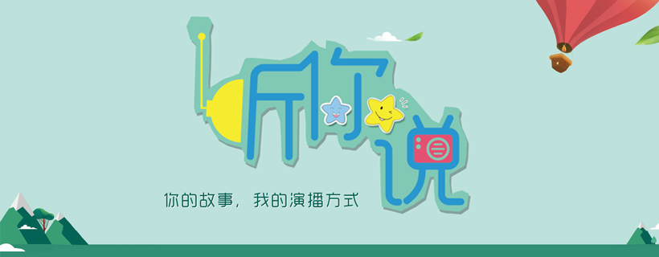
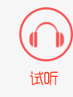

<!DOCTYPE HTML>
<html>
<head><script src="static/js/analytics-cf34f82.js" type="text/javascript"></script>
<script type="text/javascript">window.addEventListener('DOMContentLoaded',function(){var v=archive_analytics.values;v.service='wb';v.server_name='wwwb-app13.us.archive.org';v.server_ms=3532;archive_analytics.send_pageview({});});</script><script type="text/javascript" src="static/js/playback.bundle-bQvHU8mx.js" ></script>
<script type="text/javascript" src="static/js/wombat-cRqOKCOw.js" ></script>
<script type="text/javascript">
  __wm.init("https://web.archive.org/web");
  __wm.wombat("http://www.fmants.com:80/","20180927232138","https://web.archive.org/","web","/_static/",
	      "1538090498");
</script>
<link rel="stylesheet" type="text/css" href="static/css/banner-styles-bsmaklHF.css">
<link rel="stylesheet" type="text/css" href="static/css/iconochive-qtvMKcIJ.css">
<!-- End Wayback Rewrite JS Include -->

<meta charset="UTF-8">

<meta http-equiv="X-UA-Compatible" content="IE=11,IE=10,IE=9,IE=8">
<meta name="viewport" content="width=device-width, initial-scale=1.0, user-scalable=0, minimum-scale=1.0, maximum-scale=1.0">
<meta name="apple-mobile-web-app-title" content="黑蚂蚁电台">
<meta http-equiv="Cache-Control" content="no-siteapp">
<title>黑蚂蚁电台-国内个性独立播客，致力打造创意类型播客，以生活，娱乐，情感，影视，广播剧为主。黑蚂蚁电台@声音的感官世界！和你一起TING·生活！微信公众号：fmants20</title>


		<script type="text/javascript">
			window._wpemojiSettings = {"baseUrl":"https:\/\/web.archive.org\/web\/20180927232138\/https:\/\/s.w.org\/images\/core\/emoji\/11\/72x72\/","ext":".png","svgUrl":"https:\/\/web.archive.org\/web\/20180927232138\/https:\/\/s.w.org\/images\/core\/emoji\/11\/svg\/","svgExt":".svg","source":{"concatemoji":"https:\/\/web.archive.org\/web\/20180927232138\/http:\/\/www.fmants.com\/wp-includes\/js\/wp-emoji-release.min.js?ver=4.9.8"}};
			!function(a,b,c){function d(a,b){var c=String.fromCharCode;l.clearRect(0,0,k.width,k.height),l.fillText(c.apply(this,a),0,0);var d=k.toDataURL();l.clearRect(0,0,k.width,k.height),l.fillText(c.apply(this,b),0,0);var e=k.toDataURL();return d===e}function e(a){var b;if(!l||!l.fillText)return!1;switch(l.textBaseline="top",l.font="600 32px Arial",a){case"flag":return!(b=d([55356,56826,55356,56819],[55356,56826,8203,55356,56819]))&&(b=d([55356,57332,56128,56423,56128,56418,56128,56421,56128,56430,56128,56423,56128,56447],[55356,57332,8203,56128,56423,8203,56128,56418,8203,56128,56421,8203,56128,56430,8203,56128,56423,8203,56128,56447]),!b);case"emoji":return b=d([55358,56760,9792,65039],[55358,56760,8203,9792,65039]),!b}return!1}function f(a){var c=b.createElement("script");c.src=a,c.defer=c.type="text/javascript",b.getElementsByTagName("head")[0].appendChild(c)}var g,h,i,j,k=b.createElement("canvas"),l=k.getContext&&k.getContext("2d");for(j=Array("flag","emoji"),c.supports={everything:!0,everythingExceptFlag:!0},i=0;i<j.length;i++)c.supports[j[i]]=e(j[i]),c.supports.everything=c.supports.everything&&c.supports[j[i]],"flag"!==j[i]&&(c.supports.everythingExceptFlag=c.supports.everythingExceptFlag&&c.supports[j[i]]);c.supports.everythingExceptFlag=c.supports.everythingExceptFlag&&!c.supports.flag,c.DOMReady=!1,c.readyCallback=function(){c.DOMReady=!0},c.supports.everything||(h=function(){c.readyCallback()},b.addEventListener?(b.addEventListener("DOMContentLoaded",h,!1),a.addEventListener("load",h,!1)):(a.attachEvent("onload",h),b.attachEvent("onreadystatechange",function(){"complete"===b.readyState&&c.readyCallback()})),g=c.source||{},g.concatemoji?f(g.concatemoji):g.wpemoji&&g.twemoji&&(f(g.twemoji),f(g.wpemoji)))}(window,document,window._wpemojiSettings);
		</script>
		<style type="text/css">
img.wp-smiley,
img.emoji {
	display: inline !important;
	border: none !important;
	box-shadow: none !important;
	height: 1em !important;
	width: 1em !important;
	margin: 0 .07em !important;
	vertical-align: -0.1em !important;
	background: none !important;
	padding: 0 !important;
}
</style>
<link rel="stylesheet" id="ws_alipay_front_css-css" href="static/css/front-4.9.8.css" type="text/css" media="all">
<link rel="stylesheet" id="wp-player-css" href="static/css/wp-player-2.6.1.css" type="text/css" media="screen">
<link rel="stylesheet" id="_bootstrap-css" href="static/css/bootstrap.min-1.1.css" type="text/css" media="all">
<link rel="stylesheet" id="_fontawesome-css" href="static/css/font-awesome.min-1.1.css" type="text/css" media="all">
<link rel="stylesheet" id="_main-css" href="static/css/main-1.1.css" type="text/css" media="all">
<script type="text/javascript" src="static/js/jquery.min-1.1.js"></script>
<script type="text/javascript" src="static/js/front-4.9.8.js"></script>
<script type="text/javascript" src="static/js/widget-4.9.8.js"></script>
<link rel="https://api.w.org/" href="http://www.fmants.com/wp-json/">
<meta name="keywords" content="黑蚂蚁电台,黑蚂蚁网,fmants,原创悦读,糖潮FM,黑蚂蚁电台在线试听,黑蚂蚁广播,音乐播客,听你说,听说旅行,多味烘焙坊,音乐打卡机">
<meta name="description" content="国内个性独立播客，致力打造创意类型播客，以生活，娱乐，情感，影视，广播剧为主。黑蚂蚁电台@声音的感官世界！和你一起TING·生活！">
<style>a:hover, .site-navbar li:hover > a, .site-navbar li.active a:hover, .site-navbar a:hover, .search-on .site-navbar li.navto-search a, .topbar a:hover, .site-nav li.current-menu-item > a, .site-nav li.current-menu-parent > a, .site-search-form a:hover, .branding-primary .btn:hover, .title .more a:hover, .excerpt h2 a:hover, .excerpt .meta a:hover, .excerpt-minic h2 a:hover, .excerpt-minic .meta a:hover, .article-content .wp-caption:hover .wp-caption-text, .article-content a, .article-nav a:hover, .relates a:hover, .widget_links li a:hover, .widget_categories li a:hover, .widget_ui_comments strong, .widget_ui_posts li a:hover .text, .widget_ui_posts .nopic .text:hover , .widget_meta ul a:hover, .tagcloud a:hover, .textwidget a:hover, .sign h3, #navs .item li a, .url, .url:hover{color: #FF5E52;}.btn-primary, .label-primary, .branding-primary, .post-copyright:hover, .article-tags a, .pagination ul > .active > a, .pagination ul > .active > span, .pagenav .current, .widget_ui_tags .items a:hover, .sign .close-link, .pagemenu li.active a, .pageheader, .resetpasssteps li.active, #navs h2, #navs nav, .btn-primary:hover, .btn-primary:focus, .btn-primary:active, .btn-primary.active, .open > .dropdown-toggle.btn-primary, .tag-clouds a:hover{background-color: #FF5E52;}.btn-primary, .search-input:focus, #bdcs .bdcs-search-form-input:focus, #submit, .plinks ul li a:hover,.btn-primary:hover, .btn-primary:focus, .btn-primary:active, .btn-primary.active, .open > .dropdown-toggle.btn-primary{border-color: #FF5E52;}.search-btn, .label-primary, #bdcs .bdcs-search-form-submit, #submit, .excerpt .cat{background-color: #FF5E52;}.excerpt .cat i{border-left-color:#FF5E52;}@media (max-width: 720px) {.site-navbar li.active a, .site-navbar li.active a:hover, .m-nav-show .m-icon-nav{color: #FF5E52;}}@media (max-width: 480px) {.pagination ul > li.next-page a{background-color:#FF5E52;}}</style>
<!--HEADER_CODE_START-->
<meta name="baidu-site-verification" content="h7vbunhcut">
<meta property="qc:admins" content="061034417766516436375">
<!--导航图-->
<script type="text/JavaScript">
<!--
function MM_swapImgRestore() { //v3.0
  var i,x,a=document.MM_sr; for(i=0;a&&i<a.length&&(x=a[i])&&x.oSrc;i++) x.src=x.oSrc;
}

function MM_preloadImages() { //v3.0
  var d=document; if(d.images){ if(!d.MM_p) d.MM_p=new Array();
    var i,j=d.MM_p.length,a=MM_preloadImages.arguments; for(i=0; i<a.length; i++)
    if (a[i].indexOf("#")!=0){ d.MM_p[j]=new Image; d.MM_p[j++].src=a[i];}}
}

function MM_findObj(n, d) { //v4.01
  var p,i,x;  if(!d) d=document; if((p=n.indexOf("?"))>0&&parent.frames.length) {
    d=parent.frames[n.substring(p+1)].document; n=n.substring(0,p);}
  if(!(x=d[n])&&d.all) x=d.all[n]; for (i=0;!x&&i<d.forms.length;i++) x=d.forms[i][n];
  for(i=0;!x&&d.layers&&i<d.layers.length;i++) x=MM_findObj(n,d.layers[i].document);
  if(!x && d.getElementById) x=d.getElementById(n); return x;
}

function MM_swapImage() { //v3.0
  var i,j=0,x,a=MM_swapImage.arguments; document.MM_sr=new Array; for(i=0;i<(a.length-2);i+=3)
   if ((x=MM_findObj(a[i]))!=null){document.MM_sr[j++]=x; if(!x.oSrc) x.oSrc=x.src; x.src=a[i+2];}
}
//-->
</script>
<!--HEADER_CODE_END-->

<!--[if lt IE 9]><script src="http://www.fmants.com/wp-content/themes/dux/js/libs/html5.min.js"></script><![endif]-->
</head>
<body class="home blog site-layout-2"><!-- BEGIN WAYBACK TOOLBAR INSERT -->
<style type="text/css">
body {
  margin-top:0 !important;
  padding-top:0 !important;
  /*min-width:800px !important;*/
}
</style>
<script>__wm.rw(0);</script>
<div id="wm-ipp-base" lang="en" style="display:none;direction:ltr;">
<div id="wm-ipp" style="position:fixed;left:0;top:0;right:0;">
<div id="wm-ipp-inside">
  <div style="position:relative;">
    <div id="wm-logo" style="float:left;width:110px;padding-top:12px;">
      <a href="index1.html" title="Wayback Machine home page"></a>
    </div>
    <div class="r" style="float:right;">
      <div id="wm-btns" style="text-align:right;height:25px;">
                  <div id="wm-save-snapshot-success">success</div>
          <div id="wm-save-snapshot-fail">fail</div>
          <a id="wm-save-snapshot-open" href="javascript:;" title="Share via My Web Archive">
            <span class="iconochive-web"></span>
          </a>
          <a href="login.html" title="Sign In" id="wm-sign-in">
            <span class="iconochive-person"></span>
          </a>
          <span id="wm-save-snapshot-in-progress" class="iconochive-web"></span>
        	<a href="en-us.html" title="Get some help using the Wayback Machine" style="top:-6px;"><span class="iconochive-question" style="color:rgb(87,186,244);font-size:160%;"></span></a>
	<a id="wm-tb-close" href="javascript:;" onclick="__wm.h(event);return false;" style="top:-2px;" title="Close the toolbar"><span class="iconochive-remove-circle" style="color:#888888;font-size:240%;"></span></a>
      </div>
      <div id="wm-share">
          <a href="javascript:;" id="wm-screenshot" title="screenshot">
            <span class="wm-icon-screen-shot"></span>
          </a>
	<a id="wm-share-facebook" href="javascript:;" data-url="https://web.archive.org/web/20180927232138/http://www.fmants.com:80/" title="Share on Facebook" style="margin-right:5px;" target="_blank"><span class="iconochive-facebook" style="color:#3b5998;font-size:160%;"></span></a>
	<a id="wm-share-twitter" href="javascript:;" data-url="https://web.archive.org/web/20180927232138/http://www.fmants.com:80/" title="Share on Twitter" style="margin-right:5px;" target="_blank"><span class="iconochive-twitter" style="color:#1dcaff;font-size:160%;"></span></a>
      </div>
    </div>
    <table class="c" style="">
      <tbody>
	<tr>
	  <td class="u" colspan="2">
	    <form target="_top" method="get" action="/web/submit" name="wmtb" id="wmtb"><input type="text" name="url" id="wmtbURL" value="http://www.fmants.com/" onfocus="this.focus();this.select();"><input type="hidden" name="type" value="replay"><input type="hidden" name="date" value="20180927232138"><input type="submit" value="Go"></form>
	  </td>
	  <td class="n" rowspan="2" style="width:110px;">
	    <table>
	      <tbody>
		<!-- NEXT/PREV MONTH NAV AND MONTH INDICATOR -->
		<tr class="m">
		  <td class="b" nowrap="nowrap"><a href="javascript:;" title="27 Aug 2018"><strong>Aug</strong></a></td>
		  <td class="c" id="displayMonthEl" title="You are here: 23:21:38 Sep 27, 2018">SEP</td>
		  <td class="f" nowrap="nowrap"><a href="javascript:;" title="19 Nov 2019"><strong>Nov</strong></a></td>
		</tr>
		<!-- NEXT/PREV CAPTURE NAV AND DAY OF MONTH INDICATOR -->
		<tr class="d">
		  <td class="b" nowrap="nowrap"><a href="javascript:;" title="12:27:34 Aug 27, 2018"></a></td>
		  <td class="c" id="displayDayEl" style="width:34px;font-size:24px;white-space:nowrap;" title="You are here: 23:21:38 Sep 27, 2018">27</td>
		  <td class="f" nowrap="nowrap"><a href="javascript:;" title="18:23:49 Nov 19, 2019"></a></td>
		</tr>
		<!-- NEXT/PREV YEAR NAV AND YEAR INDICATOR -->
		<tr class="y">
		  <td class="b" nowrap="nowrap"><a href="javascript:;" title="15 Sep 2017"><strong>2017</strong></a></td>
		  <td class="c" id="displayYearEl" title="You are here: 23:21:38 Sep 27, 2018">2018</td>
		  <td class="f" nowrap="nowrap"><a href="javascript:;" title="19 Nov 2019"><strong>2019</strong></a></td>
		</tr>
	      </tbody>
	    </table>
	  </td>
	</tr>
	<tr>
	  <td class="s">
	    	    <div id="wm-nav-captures">
	      	      <a class="t" href="javascript:;" title="See a list of every capture for this URL">52 captures</a>
	      <div class="r" title="Timespan for captures of this URL">30 Aug 2012 - 05 Jun 2020</div>
	      </div>
	  </td>
	  <td class="k">
	    <a href="" id="wm-graph-anchor">
	      <div id="wm-ipp-sparkline" title="Explore captures for this URL" style="position: relative">
		<canvas id="wm-sparkline-canvas" width="650" height="27" border="0"></canvas>
	      </div>
	    </a>
	  </td>
	</tr>
      </tbody>
    </table>
    <div style="position:absolute;bottom:0;right:2px;text-align:right;">
      <a id="wm-expand" class="wm-btn wm-closed" href="javascript:;" onclick="__wm.ex(event);return false;"><span id="wm-expand-icon" class="iconochive-down-solid"></span> <span style="font-size:80%">About this capture</span></a>
    </div>
  </div>
    <div id="wm-capinfo" style="border-top:1px solid #777;display:none; overflow: hidden">
                    <div id="wm-capinfo-collected-by">
    <div style="background-color:#666;color:#fff;font-weight:bold;text-align:center">COLLECTED BY</div>
    <div style="padding:3px;position:relative" id="wm-collected-by-content">
            <div style="display:inline-block;vertical-align:top;width:50%;">
			<span class="c-logo" style="background-image:url(static/image/alexacrawls.jpg);"></span>
		Organization: <a style="color:#33f;" href="alexacrawls.html" target="_new"><span class="wm-title">Alexa Crawls</span></a>
		<div style="max-height:75px;overflow:hidden;position:relative;">
	  <div style="position:absolute;top:0;left:0;width:100%;height:75px;background:linear-gradient(to bottom,rgba(255,255,255,0) 0%,rgba(255,255,255,0) 90%,rgba(255,255,255,255) 100%);"></div>
	  Starting in 1996, <a href="javascript:;">Alexa Internet</a> has been donating their crawl data to the Internet Archive.  Flowing in every day, these data are added to the <a href="index8.html">Wayback Machine</a> after an embargo period.
	</div>
	      </div>
      <div style="display:inline-block;vertical-align:top;width:49%;">
			<span class="c-logo" style="background-image:url(static/image/alexacrawls.jpg)"></span>
		<div>Collection: <a style="color:#33f;" href="alexacrawls.html" target="_new"><span class="wm-title">Alexa Crawls</span></a></div>
		<div style="max-height:75px;overflow:hidden;position:relative;">
	  <div style="position:absolute;top:0;left:0;width:100%;height:75px;background:linear-gradient(to bottom,rgba(255,255,255,0) 0%,rgba(255,255,255,0) 90%,rgba(255,255,255,255) 100%);"></div>
	  Starting in 1996, <a href="javascript:;">Alexa Internet</a> has been donating their crawl data to the Internet Archive.  Flowing in every day, these data are added to the <a href="index8.html">Wayback Machine</a> after an embargo period.
	</div>
	      </div>
    </div>
    </div>
    <div id="wm-capinfo-timestamps">
    <div style="background-color:#666;color:#fff;font-weight:bold;text-align:center" title="Timestamps for the elements of this page">TIMESTAMPS</div>
    <div>
      <div id="wm-capresources" style="margin:0 5px 5px 5px;max-height:250px;overflow-y:scroll !important"></div>
      <div id="wm-capresources-loading" style="text-align:left;margin:0 20px 5px 5px;display:none"></div>
    </div>
    </div>
  </div></div></div></div><div id="donato" style="position:relative;width:100%;">
  <div id="donato-base">
    <iframe id="donato-if" src="javascript:;" scrolling="no" frameborder="0" style="width:100%; height:100%">
    </iframe>
  </div>
</div><script type="text/javascript">
__wm.bt(650,27,25,2,"web","http://www.fmants.com/","20180927232138",1996,"/_static/",["/_static/css/banner-styles.css?v=bsmaklHF","/_static/css/iconochive.css?v=qtvMKcIJ"]);
  __wm.rw(1);
</script>
<!-- END WAYBACK TOOLBAR INSERT -->
<header class="header">
	<div class="container">
		<h1 class="logo"><a href="javascript:;" title="黑蚂蚁电台-国内个性独立播客，致力打造创意类型播客，以生活，娱乐，情感，影视，广播剧为主。黑蚂蚁电台@声音的感官世界！和你一起TING·生活！微信公众号：fmants20">黑蚂蚁电台</a></h1>		<div class="brand">TING·声活
<br>用自己的方式演泽声音</div>		<ul class="site-nav site-navbar">
			<li id="menu-item-17" class="menu-item menu-item-type-custom menu-item-object-custom current-menu-item current_page_item menu-item-home menu-item-17"><a href="javascript:;">首页</a></li>
<li id="menu-item-43" class="menu-item menu-item-type-taxonomy menu-item-object-category menu-item-43"><a href="javascript:;">有声</a></li>
<li id="menu-item-125" class="menu-item menu-item-type-custom menu-item-object-custom menu-item-has-children menu-item-125"><a href="javascript:;">独家</a>
<ul class="sub-menu">
	<li id="menu-item-126" class="menu-item menu-item-type-post_type menu-item-object-page menu-item-126"><a href="javascript:;">网易云音乐独家</a></li>
	<li id="menu-item-131" class="menu-item menu-item-type-post_type menu-item-object-page menu-item-131"><a href="javascript:;">优听RADIO独家</a></li>
	<li id="menu-item-127" class="menu-item menu-item-type-post_type menu-item-object-page menu-item-127"><a href="javascript:;">更多收听方式</a></li>
</ul>
</li>
<li id="menu-item-14" class="menu-item menu-item-type-taxonomy menu-item-object-category menu-item-14"><a href="javascript:;">悦读</a></li>
<li id="menu-item-16" class="menu-item menu-item-type-taxonomy menu-item-object-category menu-item-16"><a href="javascript:;">迹路</a></li>
<li id="menu-item-243" class="menu-item menu-item-type-post_type menu-item-object-page menu-item-243"><a href="javascript:;">留言</a></li>
<li id="menu-item-287" class="menu-item menu-item-type-post_type menu-item-object-page menu-item-287"><a href="javascript:;">邻居</a></li>
<li id="menu-item-39" class="menu-item menu-item-type-post_type menu-item-object-page menu-item-39"><a href="javascript:;">我们</a></li>
							<li class="navto-search"><a href="javascript:;" class="search-show active"><i class="fa fa-search"></i></a></li>
					</ul>
		<div class="topbar">
			<ul class="site-nav topmenu">
				<li id="menu-item-684" class="menu-item menu-item-type-custom menu-item-object-custom menu-item-684"><a href="javascript:;">回到声钛圈</a></li>
<li id="menu-item-306" class="menu-item menu-item-type-post_type menu-item-object-page menu-item-306"><a href="javascript:;">订阅下载</a></li>
<li id="menu-item-303" class="menu-item menu-item-type-post_type menu-item-object-page menu-item-303"><a href="javascript:;">关注微信</a></li>
<li id="menu-item-422" class="menu-item menu-item-type-post_type menu-item-object-page menu-item-422"><a href="javascript:;">微博互动</a></li>
<li id="menu-item-302" class="menu-item menu-item-type-post_type menu-item-object-page menu-item-302"><a href="javascript:;">原创投稿</a></li>
<li id="menu-item-33" class="menu-item menu-item-type-post_type menu-item-object-page menu-item-33"><a href="javascript:;">手机客户端</a></li>
				<li class="menusns">
					关注本站 <i class="fa fa-angle-down"></i>
					<ul class="sub-menu">
						<li><a class="sns-wechat" href="javascript:;" title="关注”黑蚂蚁电台“" data-src="http://www.fmants.com/wp-content/uploads/2015/12/qrcode_for_gh_35ffac460bc8_258.jpg"><i class="fa fa-wechat"></i> 微信</a></li>						<li><a target="_blank" rel="external nofollow" href="javascript:;"><i class="fa fa-weibo"></i> 微博</a></li>																													</ul>
				</li>
			</ul>
											<a href="javascript:;" class="signin-loader">Hi, 请登录</a>
				&nbsp; &nbsp; <a href="javascript:;" class="signup-loader">我要注册</a>
				&nbsp; &nbsp; <a href="javascript:;">找回密码</a>
					</div>
		<i class="fa fa-bars m-icon-nav"></i>
	</div>
</header>
<div class="site-search">
	<div class="container">
		<form method="get" class="site-search-form" action="https://web.archive.org/web/20180927232138/http://www.fmants.com/"><input class="search-input" name="s" type="text" placeholder="输入关键字" value=""><button class="search-btn" type="submit"><i class="fa fa-search"></i></button></form>	</div>
</div>
<section class="container">
	<div class="content-wrap">
	<div class="content">
		<div id="focusslide" class="carousel slide" data-ride="carousel"><ol class="carousel-indicators"><li data-target="#focusslide" data-slide-to="0" class="active"></li><li data-target="#focusslide" data-slide-to="1"></li><li data-target="#focusslide" data-slide-to="2"></li></ol><div class="carousel-inner" role="listbox"><div class="item active"><a target="_blank" href="javascript:;"></a></div><div class="item"><a target="_blank" href="javascript:;"></a></div><div class="item"><a target="_blank" href="javascript:;"></a></div></div><a class="left carousel-control" href="javascript:;" role="button" data-slide="prev"><i class="fa fa-angle-left"></i></a><a class="right carousel-control" href="javascript:;" role="button" data-slide="next"><i class="fa fa-angle-right"></i></a></div>						<div class="asb asb-index asb-index-01"><table style="width:820px;height:120px;" cellpadding="0" cellspacing="0" border="0" class="ke-zeroborder" bordercolor="#000000">
<tbody>
<tr>

<td width="86"><a href="javascript:;" onmouseout="MM_swapImgRestore()" onmouseover="MM_swapImage('Image1','','https://web.archive.org/web/20180927232138/http://www.fmants.com/wp-content/uploads/2016/02/daoh_01.jpg',1)"></a></td>

<td width="111"><a href="javascript:;" onmouseout="MM_swapImgRestore()" onmouseover="MM_swapImage('Image2','','https://web.archive.org/web/20180927232138/http://www.fmants.com/wp-content/uploads/2016/02/daoh_02.jpg',1)"></a>
</td>

<td width="108"><a href="javascript:;" onmouseout="MM_swapImgRestore()" onmouseover="MM_swapImage('Image3','','https://web.archive.org/web/20180927232138/http://www.fmants.com/wp-content/uploads/2016/02/daoh_03.jpg',1)"></a>
</td>

<td width="105"><a href="javascript:;" onmouseout="MM_swapImgRestore()" onmouseover="MM_swapImage('Image4','','https://web.archive.org/web/20180927232138/http://www.fmants.com/wp-content/uploads/2016/02/daoh_04.jpg',1)"></a>
</td>

<td width="111"><a href="javascript:;" onmouseout="MM_swapImgRestore()" onmouseover="MM_swapImage('Image5','','https://web.archive.org/web/20180927232138/http://www.fmants.com/wp-content/uploads/2016/02/daoh_05.jpg',1)"></a>
</td>

<td width="96"><a href="javascript:;" onmouseout="MM_swapImgRestore()" onmouseover="MM_swapImage('Image6','','https://web.archive.org/web/20180927232138/http://www.fmants.com/wp-content/uploads/2016/02/daoh_06.jpg',1)"></a>
</td>

<td width="112"><a href="javascript:;" onmouseout="MM_swapImgRestore()" onmouseover="MM_swapImage('Image7','','https://web.archive.org/web/20180927232138/http://www.fmants.com/wp-content/uploads/2016/02/daoh_07.jpg',1)"></a>
</td>

<td width="91"><a href="javascript:;" onmouseout="MM_swapImgRestore()" onmouseover="MM_swapImage('Image8','','https://web.archive.org/web/20180927232138/http://www.fmants.com/wp-content/uploads/2016/02/daoh_08.jpg',1)"></a></td>

</tr>
</tbody>
</table>
<!-- 不变色代码
<table style="width:820px;height:120px;" cellpadding="0" cellspacing="0" border="0" class="ke-zeroborder" bordercolor="#000000">
<tbody>
<tr>

<td width="86"><a href="http://www.fmants.com/archives/category/tuijian" target="_blank"></a>
</td>

<td width="111"><a href="http://www.fmants.com/archives/category/jx" target="_blank"></a>
</td>

<td width="108"><a href="http://www.fmants.com/archives/category/fm" target="_blank"></a>
</td>

<td width="105"><a href="http://www.fmants.com/archives/category/read" target="_blank"></a>
</td>

<td width="111"><a href="http://www.fmants.com/archives/category/fenxiang" target="_blank"></a>
</td>

<td width="96"><a href="http://www.fmants.com/archives/category/yule" target="_blank"></a>
</td>

<td width="112"><a href="http://www.fmants.com/subscribe" target="_blank"></a>
</td>

<td width="91"><a href="http://www.fmants.com/ting" target="_blank"></a>
</td>

</tr>
</tbody>
</table>
--></div>		<div class="title">
			<h3>
				最新发布							</h3>
			<div class="more">全国粉丝群：群1：124475925 | 群2：124475995 | 播客交流群：124409470 | 应聘群：245151720</div>		</div>
		 
		<article class="excerpt excerpt-1"><a target="_blank" class="focus" href="javascript:;"></a><header><a class="cat" href="javascript:;">推荐<i></i></a> <h2><a target="_blank" href="javascript:;" title="【新歌】《奔走天涯》王旭鹏-黑蚂蚁电台">【新歌】《奔走天涯》王旭鹏</a></h2></header><p class="meta"><time><i class="fa fa-clock-o"></i>2017-11-13</time><span class="author"><i class="fa fa-user"></i><a href="javascript:;">蚂蚁先生</a></span><span class="pv"><i class="fa fa-eye"></i>阅读(1553)</span><a class="pc" href="javascript:;"><i class="fa fa-comments-o"></i>评论(1)</a></p><p class="note">歌曲《奔走天涯》 歌手：王旭鹏 作词：王旭鹏、朱贝贝 作曲：王旭鹏、朱贝贝 和声：龚泽艺 编曲：关    剑 监制：崔占元  男人的征途从来都是星辰大海，前方的路即使布满荆棘，也要用力闯。 不惧风雨，潇洒坦荡。带着赤子的骄傲，浪迹天涯，四...</p></article><article class="excerpt excerpt-2"><a target="_blank" class="focus" href="javascript:;"></a><header><a class="cat" href="javascript:;">音乐<i></i></a> <h2><a target="_blank" href="javascript:;" title="【新歌】《幸福像阳光一样》Marina杨洋VS熊天平-黑蚂蚁电台">【新歌】《幸福像阳光一样》Marina杨洋VS熊天平</a></h2></header><p class="meta"><time><i class="fa fa-clock-o"></i>2017-11-10</time><span class="author"><i class="fa fa-user"></i><a href="javascript:;">蚂蚁先生</a></span><span class="pv"><i class="fa fa-eye"></i>阅读(1167)</span><a class="pc" href="javascript:;"><i class="fa fa-comments-o"></i>评论(0)</a></p><p class="note">&nbsp; 《幸福像阳光一样》 Marina杨洋VS熊天平 对于爱人而言幸福不过一起晒个月亮，对于母亲而言幸福不过子女一路锦程年轻无恙，对于儿女而言幸福不过长辈岁岁安康，幸福是我们每个人一生所追求的状态。 创作女歌手Marina杨洋和宝岛...</p></article><article class="excerpt excerpt-3"><a target="_blank" class="focus" href="javascript:;"></a><header><a class="cat" href="javascript:;">分享<i></i></a> <h2><a target="_blank" href="javascript:;" title="【随心记】一封苍白的信-黑蚂蚁电台">【随心记】一封苍白的信</a></h2></header><p class="meta"><time><i class="fa fa-clock-o"></i>2017-05-09</time><span class="author"><i class="fa fa-user"></i><a href="javascript:;">蚂蚁先生</a></span><span class="pv"><i class="fa fa-eye"></i>阅读(1118)</span><a class="pc" href="javascript:;"><i class="fa fa-comments-o"></i>评论(3)</a></p><p class="note">有这样一个信封，上面没有一个文字，可当你拆开信封的时候，你却能闻到一股香味，打开信纸，却只有寥寥几个字，感觉好苍白&#8230;&#8230; 但这样的几个字，却让自己内心深刻，那苍白的信纸上，却写着一句让我惊讶的话，可能，也会让你特别惊讶...</p></article><article class="excerpt excerpt-4"><a target="_blank" class="focus" href="javascript:;"></a><header><a class="cat" href="javascript:;">悦读<i></i></a> <h2><a target="_blank" href="javascript:;" title="【随心记】对你，只想说我很好-黑蚂蚁电台">【随心记】对你，只想说我很好</a></h2></header><p class="meta"><time><i class="fa fa-clock-o"></i>2017-04-29</time><span class="author"><i class="fa fa-user"></i><a href="javascript:;">蚂蚁先生</a></span><span class="pv"><i class="fa fa-eye"></i>阅读(1037)</span><a class="pc" href="javascript:;"><i class="fa fa-comments-o"></i>评论(1)</a></p><p class="note">每个人都有自己的世界，每个人也会在自己的世界里享受着孤独的温度，虽然有些冷，但却不想逃离。每当我们走过很多，看过很多。那些风景，总会让我们想要说些什么，也许只是一句我很好，又可能是一句“嗯！”。 不管是简单的一个字，还是简单的三个字，似乎都...</p></article><article class="excerpt excerpt-5"><a target="_blank" class="focus" href="javascript:;"></a><header><a class="cat" href="javascript:;">悦读<i></i></a> <h2><a target="_blank" href="javascript:;" title="【随心记】你的他/她是什么样子-黑蚂蚁电台">【随心记】你的他/她是什么样子</a></h2></header><p class="meta"><time><i class="fa fa-clock-o"></i>2017-02-20</time><span class="author"><i class="fa fa-user"></i><a href="javascript:;">蚂蚁先生</a></span><span class="pv"><i class="fa fa-eye"></i>阅读(1269)</span><a class="pc" href="javascript:;"><i class="fa fa-comments-o"></i>评论(0)</a></p><p class="note">你的他/她 是什么样子 ··· 文/糖潮  栏目/随心记 每个人心中 都有一个 属于自己爱的人 的样子 也有一个 名字 一直 在内心深处 留下了烙印 走过 些许地方 写过 些许日记 一直都在 用心画着 和你的那些点滴 留下的 都是深深的印痕...</p></article><article class="excerpt excerpt-6"><a target="_blank" class="focus" href="javascript:;"></a><header><a class="cat" href="javascript:;">有声<i></i></a> <h2><a target="_blank" href="javascript:;" title="【听你说】一只聆听的鱼-黑蚂蚁电台">【听你说】一只聆听的鱼</a></h2></header><p class="meta"><time><i class="fa fa-clock-o"></i>2017-02-20</time><span class="author"><i class="fa fa-user"></i><a href="javascript:;">蚂蚁先生</a></span><span class="pv"><i class="fa fa-eye"></i>阅读(1397)</span><a class="pc" href="javascript:;"><i class="fa fa-comments-o"></i>评论(1)</a></p><p class="note">文/糖潮  声/糖潮 深夜了 听一只鱼说 深夜的时候 你在做什么 是在听 还是在写下 深夜时候 静静聆听 一只鱼的述说 一座城市 一个人 一个故事   也许你有在听你自己的故事，也许你在逃避你自己的故事，有时候不知道为什么，总会想要一种方式...</p></article><article class="excerpt excerpt-7"><a target="_blank" class="focus" href="javascript:;"></a><header><a class="cat" href="javascript:;">悦读<i></i></a> <h2><a target="_blank" href="javascript:;" title="【随心记】说不出话的眼泪-黑蚂蚁电台">【随心记】说不出话的眼泪</a></h2></header><p class="meta"><time><i class="fa fa-clock-o"></i>2017-01-22</time><span class="author"><i class="fa fa-user"></i><a href="javascript:;">蚂蚁先生</a></span><span class="pv"><i class="fa fa-eye"></i>阅读(1233)</span><a class="pc" href="javascript:;"><i class="fa fa-comments-o"></i>评论(1)</a></p><p class="note">作者：述 所属栏目：听你说 版权说明：黑蚂蚁电台及作者独有 看着天空，那朵像你的云朵已经飘然离去，模糊不清··· 一个人，走在马路上，静静的听着那车来车往的机动声，和那拂耳的微风声，脑子里不停回荡着，同样的地方，同样的马路，却有着不一样风景...</p></article><article class="excerpt excerpt-8"><a target="_blank" class="focus" href="javascript:;"></a><header><a class="cat" href="javascript:;">悦读<i></i></a> <h2><a target="_blank" href="javascript:;" title="【随心记】此刻，我已经从你的眼里路过-黑蚂蚁电台">【随心记】此刻，我已经从你的眼里路过</a></h2></header><p class="meta"><time><i class="fa fa-clock-o"></i>2017-01-13</time><span class="author"><i class="fa fa-user"></i><a href="javascript:;">蚂蚁先生</a></span><span class="pv"><i class="fa fa-eye"></i>阅读(1195)</span><a class="pc" href="javascript:;"><i class="fa fa-comments-o"></i>评论(1)</a></p><p class="note">作者：述 最好的时光，随着时光的流逝，变得苍白无味，最好的时光，已经变得暗淡无光！ 还记得那看的樱花盛开的季节吗？还记得，你我初次相遇的那一秒钟吗？还记得，你不愿意摘下眼镜的你吗？此刻，我已经你的眼里路过！没有任何暴风雨的消失在你眼里的世界...</p></article><article class="excerpt excerpt-9"><a target="_blank" class="focus" href="javascript:;"></a><header><a class="cat" href="javascript:;">悦读<i></i></a> <h2><a target="_blank" href="javascript:;" title="【悦读】未曾联络的“一封信”-黑蚂蚁电台">【悦读】未曾联络的“一封信”</a></h2></header><p class="meta"><time><i class="fa fa-clock-o"></i>2016-12-28</time><span class="author"><i class="fa fa-user"></i><a href="javascript:;">蚂蚁先生</a></span><span class="pv"><i class="fa fa-eye"></i>阅读(1197)</span><a class="pc" href="javascript:;"><i class="fa fa-comments-o"></i>评论(8)</a></p><p class="note">作者：文/述 许久之后的一天，他打开了一个尘已久的盒子，看到里面的“一封信”，上面写着： 还记得我为你写的那些歌词 虽然很稚嫩 虽然不能让你完全了解到 那时心里所想 但是我并没有遗憾 也许 这些于你而言 已经不算什么 都是过去式 只希望 每...</p></article><article class="excerpt excerpt-10"><a target="_blank" class="focus" href="javascript:;"></a><header><a class="cat" href="javascript:;">分享<i></i></a> <h2><a target="_blank" href="javascript:;" title="【悦读】又分手了，却不舍得-黑蚂蚁电台">【悦读】又分手了，却不舍得</a></h2></header><p class="meta"><time><i class="fa fa-clock-o"></i>2016-10-17</time><span class="author"><i class="fa fa-user"></i><a href="javascript:;">蚂蚁先生</a></span><span class="pv"><i class="fa fa-eye"></i>阅读(1575)</span><a class="pc" href="javascript:;"><i class="fa fa-comments-o"></i>评论(12)</a></p><p class="note">“好好的，好吗？不要这样子，好吗？···”每当听到这些话的时候，很无奈，也很感伤，更多的是不知所措。 &#8211;  题记 又吵架了，又说分手了，好累，身心俱疲的自己的，不知道该怎么办，只好又说分手了。 在一起的时候，很多的时候，发现自己...</p></article><div class="pagination"><ul><li class="prev-page"></li><li class="active"><span>1</span></li><li><a href="javascript:;">2</a></li><li><a href="javascript:;">3</a></li><li><a href="javascript:;">4</a></li><li><span> ... </span></li><li class="next-page"><a href="javascript:;">下一页</a></li><li><span>共 8 页</span></li></ul></div>		<div class="asb asb-index asb-index-02"><table style="width:820px;height:190px;" cellpadding="0" cellspacing="0" border="0" class="ke-zeroborder" bordercolor="#000000">
<tbody>
<tr>
<td width="190"><a href="javascript:;" target="_blank"></a>
</td>
<td width="20"></td>
<td width="190"><a href="javascript:;" target="_blank"></a>
</td>
<td width="20"></td>
<td width="190">
<a href="javascript:;" target="_blank"></a>
</td>
<td width="20"></td>
<td width="190">
<a href="javascript:;" target="_blank"></a>
</td>
</tr>
</tbody>
</table></div>	</div>
	</div>
	<aside class="sidebar">
	<div class="widget widget-tops">
		<ul class="widget-nav">
			<li class="active">最新动态</li>					</ul>
		<ul class="widget-navcontent">
							<li class="item item-01 active">
					<ul>
						<li><time>10-17</time><a target="_blank" href="javascript:;">【动态】一张图庆祝五岁生日快乐！</a></li><li><time>09-07</time><a target="_blank" href="javascript:;">【动态】受邀入驻VV娱乐社区</a></li><li><time>07-27</time><a target="_blank" href="javascript:;">【大事件】青花电台单飞了！</a></li><li><time>01-20</time><a target="_blank" href="javascript:;">【动态】音乐打卡机初上线就被推荐！</a></li><li><time>01-13</time><a target="_blank" href="javascript:;">【动态】黑蚂蚁电台启动改版计划</a></li>					</ul>
				</li>
								</ul>
	</div>
<div class="widget widget_ui_ads"><div class="item"><!-- 邮箱订阅；原创投稿；APP下载 -->
<table width="359" height="96" border="0" cellspacing="0" cellpadding="0">
  <tr>
    <td width="110"><!--QQ邮件列表订阅嵌入代码--><a target="_blank" href="javascript:;"></a></td>
    <td width="15"></td>
    <td width="110"><a href="javascript:;" target="_blank"></a></td>
    <td width="14"></td>
    <td width="110"><a href="javascript:;" target="_blank"></a></td>
  </tr>
</table></div></div><div class="widget widget_ui_ads"><div class="item"><!-- 百度贴吧；兴趣部落；豆瓣小站 -->
<table width="359" height="35" border="0" cellspacing="0" cellpadding="0">
  <tr>
    <td width="110"><a target="_blank" href="javascript:;"></a></td>
    <td width="15"></td>
    <td width="110"><a href="javascript:;" target="_blank"></a></td>
    <td width="14"></td>
    <td width="110"><a href="javascript:;" target="_blank"></a></td>
  </tr>
</table></div></div><div class="widget widget_ui_posts"><h3>随心悦</h3><ul><li><a target="_blank" href="javascript:;"><span class="thumbnail"></span><span class="text">【述】留不住</span><span class="muted">2016-03-05</span><span class="muted">评论()</span></a></li>
<li><a target="_blank" href="javascript:;"><span class="thumbnail"></span><span class="text">【音乐打卡机】用安静的方式听金熙泽</span><span class="muted">2016-01-25</span><span class="muted">评论()</span></a></li>
<li><a target="_blank" href="javascript:;"><span class="thumbnail"></span><span class="text">【悦读】这样的小情歌，听着不一样</span><span class="muted">2015-12-12</span><span class="muted">评论()</span></a></li>
</ul></div><div class="widget widget_ui_textasb"><a class="style01" href="javascript:;" target="_blank"><strong>我想，我欠你一句话</strong><h2>我想，我欠你一句话</h2><p>这一缕阳光，有些烫，不敢靠近。这一缕阳光，有些亮，不敢睁开眼。因为，我听到你的声音</p></a></div><div class="widget widget_ui_ads"><div class="item"><iframe width="100%" height="118" class="share_self" frameborder="0" scrolling="no" src="javascript:;"></iframe></div></div><div class="widget widget_nav_menu"><h3>友情链接</h3><div class="menu-%e5%8f%8b%e6%83%85%e8%bf%9e%e6%8e%a5-container"><ul id="menu-%e5%8f%8b%e6%83%85%e8%bf%9e%e6%8e%a5" class="menu"><li id="menu-item-18" class="menu-item menu-item-type-custom menu-item-object-custom menu-item-18"><a href="javascript:;">壁虎网络电台</a></li>
<li id="menu-item-19" class="menu-item menu-item-type-custom menu-item-object-custom menu-item-19"><a href="javascript:;">麻雀电台</a></li>
<li id="menu-item-836" class="menu-item menu-item-type-custom menu-item-object-custom menu-item-836"><a href="javascript:;">闪电配音</a></li>
<li id="menu-item-523" class="menu-item menu-item-type-custom menu-item-object-custom menu-item-523"><a href="javascript:;">时光日记电台</a></li>
<li id="menu-item-22" class="menu-item menu-item-type-custom menu-item-object-custom menu-item-22"><a href="javascript:;">月光浮屿网络电台</a></li>
<li id="menu-item-23" class="menu-item menu-item-type-custom menu-item-object-custom menu-item-23"><a href="javascript:;">半岛网络电台</a></li>
<li id="menu-item-25" class="menu-item menu-item-type-custom menu-item-object-custom menu-item-25"><a href="javascript:;">活力音乐台</a></li>
<li id="menu-item-218" class="menu-item menu-item-type-custom menu-item-object-custom menu-item-218"><a href="javascript:;">陌声人</a></li>
<li id="menu-item-21" class="menu-item menu-item-type-custom menu-item-object-custom menu-item-21"><a href="javascript:;">情感文章</a></li>
<li id="menu-item-253" class="menu-item menu-item-type-custom menu-item-object-custom menu-item-253"><a href="javascript:;">可乐姐姐讲故事</a></li>
<li id="menu-item-454" class="menu-item menu-item-type-custom menu-item-object-custom menu-item-454"><a href="javascript:;">凡听电台</a></li>
<li id="menu-item-286" class="menu-item menu-item-type-custom menu-item-object-custom menu-item-286"><a href="javascript:;">更多友链</a></li>
</ul></div></div>		<div class="widget widget_recent_entries">		<h3>最新发布</h3>		<ul>
											<li>
					<a href="javascript:;">【新歌】《奔走天涯》王旭鹏</a>
									</li>
											<li>
					<a href="javascript:;">【新歌】《幸福像阳光一样》Marina杨洋VS熊天平</a>
									</li>
											<li>
					<a href="javascript:;">【随心记】一封苍白的信</a>
									</li>
											<li>
					<a href="javascript:;">【随心记】对你，只想说我很好</a>
									</li>
											<li>
					<a href="javascript:;">【随心记】你的他/她是什么样子</a>
									</li>
											<li>
					<a href="javascript:;">【听你说】一只聆听的鱼</a>
									</li>
											<li>
					<a href="javascript:;">【随心记】说不出话的眼泪</a>
									</li>
											<li>
					<a href="javascript:;">【随心记】此刻，我已经从你的眼里路过</a>
									</li>
											<li>
					<a href="javascript:;">【悦读】未曾联络的“一封信”</a>
									</li>
											<li>
					<a href="javascript:;">【动态】一张图庆祝五岁生日快乐！</a>
									</li>
					</ul>
		</div></aside></section>
<div class="branding branding-black">
	<div class="container">
		<h2>TING·声活 | 期待你的加入</h2>
		<a target="blank" class="btn btn-lg" href="javascript:;">关于我们</a><a target="blank" class="btn btn-lg" href="javascript:;">如何收听</a>	</div>
</div>
<footer class="footer">
	<div class="container">
		<p>&copy; 2011-2018 <a href="javascript:;">黑蚂蚁电台</a> &nbsp;   All rights reserved  <a href="javascript:;">鄂ICP备15023172号-1</a></p>
		<script type="text/javascript">var cnzz_protocol = (("https:" == document.location.protocol) ? " https://" : " http://");document.write(unescape("%3Cspan id='cnzz_stat_icon_1000505013'%3E%3C/span%3E%3Cscript src='" + cnzz_protocol + "s4.cnzz.com/z_stat.php%3Fid%3D1000505013%26show%3Dpic1' type='text/javascript'%3E%3C/script%3E"));</script> 
<script>
var _hmt = _hmt || [];
(function() {
  var hm = document.createElement("script");
  hm.src = "//web.archive.org/web/20180927232138/http://hm.baidu.com/hm.js?e2599a4deb5b1976b82b7af0c8052b26";
  var s = document.getElementsByTagName("script")[0]; 
  s.parentNode.insertBefore(hm, s);
})();
</script> | <a href="javascript:;"></a>	</div>
</footer>

<script>
window.jsui={
    www: 'https://web.archive.org/web/20180927232138/http://www.fmants.com',
    uri: 'https://web.archive.org/web/20180927232138/http://www.fmants.com/wp-content/themes/dux',
    ver: '1.1',
	roll: 0,
    ajaxpager: '0',
    url_rp: 'https://web.archive.org/web/20180927232138/http://www.fmants.com/repassword'
};
</script>
<!--FOOTER_CODE_START-->
<!-- 多说公共JS代码 start (一个网页只需插入一次) -->
<script type="text/javascript">// <![CDATA[
var duoshuoQuery = {short_name:"fmants"}; (function() { var ds = document.createElement('script'); ds.type = 'text/javascript';ds.async = true; ds.src = (document.location.protocol == 'https:' ? 'https:' : 'http:') + '//web.archive.org/web/20180927232138/http://static.duoshuo.com/embed.js'; ds.charset = 'UTF-8'; (document.getElementsByTagName('head')[0] || document.getElementsByTagName('body')[0]).appendChild(ds); })();
// ]]></script>
<!-- 多说公共JS代码 end -->
<!--FOOTER_CODE_END-->
<script type="text/javascript" src="static/js/soundmanager2-2.6.1.js"></script>
<script type="text/javascript">
/* <![CDATA[ */
var wp_player_params = {"swf":"https:\/\/web.archive.org\/web\/20180927232138\/http:\/\/www.fmants.com\/wp-content\/plugins\/wp-player\/assets\/js\/libs\/soundmanager\/","img":"https:\/\/web.archive.org\/web\/20180927232138\/http:\/\/www.fmants.com\/wp-content\/plugins\/wp-player\/assets\/images\/default.png","url":"https:\/\/web.archive.org\/web\/20180927232138\/http:\/\/www.fmants.com\/wp-admin\/admin-ajax.php","nonce":"a60e8c2c25","single":"false"};
/* ]]> */
</script>
<script type="text/javascript" src="static/js/wp-player-2.6.1.js"></script>
<script type="text/javascript" src="static/js/bootstrap.min-1.1.js"></script>
<script type="text/javascript" src="static/js/loader-1.1.js"></script>
<script type="text/javascript" src="static/js/wp-embed.min-4.9.81.js"></script>
</body>
</html>
<!-- Dynamic page generated in 0.549 seconds. -->
<!-- Cached page generated by WP-Super-Cache on 2018-09-28 06:58:35 -->

<!-- super cache --><!--
     FILE ARCHIVED ON 23:21:38 Sep 27, 2018 AND RETRIEVED FROM THE
     INTERNET ARCHIVE ON 08:11:59 Feb 18, 2021.
     JAVASCRIPT APPENDED BY WAYBACK MACHINE, COPYRIGHT INTERNET ARCHIVE.

     ALL OTHER CONTENT MAY ALSO BE PROTECTED BY COPYRIGHT (17 U.S.C.
     SECTION 108(a)(3)).
-->
<!--
playback timings (ms):
  esindex: 0.019
  PetaboxLoader3.resolve: 291.205 (3)
  CDXLines.iter: 23.198 (3)
  exclusion.robots.policy: 0.575
  RedisCDXSource: 2.087
  load_resource: 247.632
  captures_list: 3267.434
  LoadShardBlock: 3236.993 (3)
  PetaboxLoader3.datanode: 3035.913 (4)
  exclusion.robots: 0.593
-->